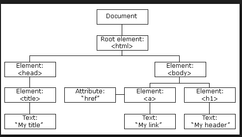

JavaScript!
We've learned how the browser retrieves an HTML document, either from the hard drive or over a network connection, loads it into memory as a DOM, and renders it to the page with CSS styling applied.
We can view the page, scroll around, click on a link to change pages, or submit a form. But other than that, once the page is rendered to the screen, it is functionally inert.
If we want more complex interactive behavior we need to use a scripting language like JavaScript to describe what should happen when and how.
Before we start throwing down <script> tags or creating our own .js files, let's write a few lines by hand in the console.
The JavaScript Console
So far, we have used Chrome's developer tools to check out the DOM and see a webpage's CSS. Now, we'll learn how to use Chrome's JavaScript console to write JavaScript.
Go ahead and open up your Chrome Developer Tools ([CMD + SHIFT + ?] if you forget how) and switch to the JavaScript Console. The Console is a REPL. We can use the JavaScript console to write some JavaScript without creating a file. Let's play around in the JavaScript console!
The internet, quite simply put, serves to transfer data from one place to another. Data types form the basic building blocks of understanding JavaScript. Today we'll learn about basic data types: Numbers, Strings and Booleans. We'll pick up some nifty math operators along the way.
The Number Data Type & Math Operators
Exercise: Type each of the following lines of code (expressions) into the console one at a time and consider the result.
> 2 + 3> 3 * 5 + 4> 3 * (5 + 4)> -300 * 2.57> 25 % 6> 1e4 * 2
What have we learned? We can use the console as a simple caluculator by employing values with the data type of number and mathematical operators such as +, -, *, /, %.
Exercise: From the console, calculate how many seconds old you are.
Exercise: How can you tell whether a number is even or odd using the console?
The String Data Type
> "Hello, how are you?"
The string data type denotes a sequence of alphanumeric characters which are often useful for communicating information to weak-minded humans who aren't able to interact using pure logic.
What happens if we try to type the following into the console without the quotes?
> Hello, how are you?
We can evaluate non-numerical expressions as well. To what value does the following expression resolve when evaluted?
> 'Just fine,' + ' ' + 'thank you'
String concatenation is the operation of joining character strings end-to-end.
Exercise: Is the following a string or a number?
> '5'
Exercise: What do you get for the following? Why do you think?
> 5 + 'hello world'> 'hello world' + 5
typeof
typeof is also an operator and similar to the math operators we learned above. Instead of telling you what it does, let's have you figure it out!
Exercise: Try the following. What do we get?
> typeof '5'> TYPEOF '5'why does this not work?> typeof 5> typeof 'hello world'> typeof 'hello world' + 1
Alerting and Prompting Using window
The window keyword is a special thingy (it's actually an object, which we'll learn about later on) that holds information about the currently open browser tab. It contains many properties (simply put: associated pieces of data), of which, the DOM (document) is one. Here are a few more, check 'em out
> window.document> window.location> window.history
What do these get you? What do you think they are?
You can also look at the window object directly, but be warned, it's intense!
> window
Not only does the window object give us access to the current browser tab's state, we can also use it to issue commands to the browser. What does this command do?
> window.alert("Jello, whirled")
Similar to the Terminal, the first part of the command references what function we're looking to run. Next comes the invokation operator () - similar to a mathematical operator ( +, -, * ) - which causes the JavaScript interpreter to actually run the function. Inside the parentheses we place the arguments we wish to pass as input. (In this case the string to be displayed)
The expression 2 + 3 resolves to the value 5. What value does the following expression resolve to? What is its data type?
> window.prompt("How are you feeling today?")
The window context is implied.
> alert("Jello, whirled")> prompt("How are you feeling today?")
Where Does Your JavaScript Go?
Let's move away from Chrome's console and towards something a bit more permanent. Let's stick some JavaScript into some HTML!
In the same way that a <style> tag tells the browser to switch from the HTML interpreter to the CSS interpreter to read code inside it, the <script> tag tells the browser to interpret its contents according to the rules of JavaScript.
<html>
<head>
</head>
<body>
<h1>mah payge</h1>
<p>yup, yup</p>
<script>
// the interpreter will skip any line that starts with a double slash
// these lines are explanatory comments to help squishy-brained humans
alert("Welcome to mah deng website, brah!")
prompt("How's it going?")
</script>
</body>
</html>
Exercise: Your First JavaScript Enabled Web Page
- Create a new HTML document, correctly set up with html, head, and body tags
- Add a script tag directly before the closing body tag.
- Inside of a script tag, alert visitors that your site is extremely awesome and should thus be enjoyed with caution.
- Prompt the user for their name
- Greet them by name using another alert
If you're using Sublime, you can right-click and pick "Show in Browser" to see and test it in a browser.
This one's tough, but do give a good go at it before raising your hand for help. Hint for steps 4 and 5: Think of your prompt as an expression. What value does it resolve to? And what value do you need inside of your second alert?
Logging
Ok, though illustrative, alerts are annoying. That's why they're not often used. It is more usual to use the console to output information. Try this:
<script>
window.console.log("Where is this message displayed?")
</script>Or, more succinctly:
<script>
console.log("This is mostly used for debugging.", "We'll learn how to write directly into the HTML document a little later.")
</script>Exercise: Ask the user what their favorite sports team is. Secretly log a message trash-talking their team in the console.
Exercise:
- Go back through your past projects and add a <script> tag at the bottom of each page, right before the </body>.
- Add some secret console.log goodness to each.
- Add more JavaScript as you see fit.
Variables
In programming, it can be extremely useful to store values for later use. Variables are identifiers (labels, nametags) used to set and retrieve stored values. They are called variables because you can change what value they hold based on user input, the current program state, etc.
We use the var keyword to declare a variable. When first declared, variables have a value of undefined. The assignment operator stores a value. Type along in your console:
> var x> x> x = 1> x + 4> x> x = 5> var y = 2> x + y + 7> y = x + 7
So when we write var rate = 100 your JavaScript Runtime Environment jots down the variable "rate" in its ledger and gives it a pointer to a memory location:

Type the following in your console one line at a time (don't type the comments):
> my_variable// what does this error mean?> var my_variable> my_variable// what has changed from the first line?> my_variable = "I'm a string value!"> typeof my_variable
Pass By Value
What is the value of first at the end of this sequence?
> var first, second> first = "hello"> second = "goodbye"> first = second> second = "wait, you've forgotten your hat!"
In JavaScript, primitives (numbers, strings, booleans) are pass by value. This means that when you set one variable equal to another, the value stored there is copied over, and the two variables retain no lasting connection to each other. (objects are pass by reference, we'll learn how that's different later)
Review
Exercise 1:
- Declare variables a, b and c. Assign a number to each.
- Declare variable d and assign it the value of a, b, and c added together.
- Re-assign the value of b to a. Then change the value of b. What is the value of a?
Exercise 2:
- Create variables "hour" and "minute" to reflect the current time.
- Write an expression to calculate how many seconds until midnight.
- Change "minute" to be accurate again as time has probably passed.
- Run the same calculation again (press the up key in the console to scroll back to it).
Exercise 3:
- Declare at least 10 variables such as 'name', 'age', 'birthday', 'hometown', 'occupation', 'favoriteFood', 'bestFriend', etc, and set their values equal to strings containing the appropriate information about yourself.
- console.log a paragraph about yourself using the appropriate variables to insert the relevant information in the appropriate places.
- Create a new HTML document and re-write the variables and the console.log in a <script> tag so that you'll have it for later.